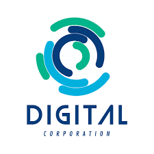
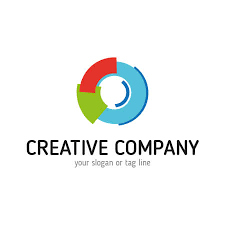
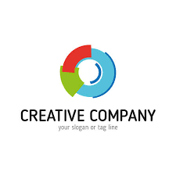

BUSINESS NEED CUSTOM SOFTWARE
Our team of US-Based developers, designers, project managers & business analysts have 10+ years of experience building custom enterprise software. We combine our passion for great user experience with deep technical knowledge to build products that are easy-to-use, functional, scaleable, and secure.
Get in touch and tell us your vision. Our team is focused on building software that delivers long-term results for your business.
Our powerhouse team distributed around the world keeps our rates as competitive as possible while allowing us to pull talent from the most competitive markets. To deliver the high standards we hold our web application development services to, our development team utilizes open-source toolkits from the biggest names in tech. Our approach allows us to build your application just once for the web, and then we can deploy native versions to other platforms of your choice including iPhone, Android and more.
Our custom web application development services bring our clients more efficiency and accessibility than typical SaaS solutions. By working closely with project stakeholders, Vice Software is able to deliver assets that put value with the business rather than individual employees and help the business get more out of their investments in technology. Whether your business finds a home in the tech industry or you want to modernize your workplace through proprietary software, our team has the knowledge and experience to develop the tools that will lead to your growth and scalability.
Vice Software offers a more reliable alternative to other web application development services. By only building what you ask for, we are able to more quickly introduce your users to the platform
Updates
Our 3D cameras and virtual tour software
platform help you digitize your building,
automatically create 3D tours, 4K print
quality photos, schematic floor plans,
OBJ files, point clouds, videos, and more.
Skip to main content Matterport and Facebook
AI announce research collaboration.
Learn more. Keywords.
Sales: +1(888) 993-8990. Contact Us.
English English; English (UK) Français; Deutsch

.jpg) 
